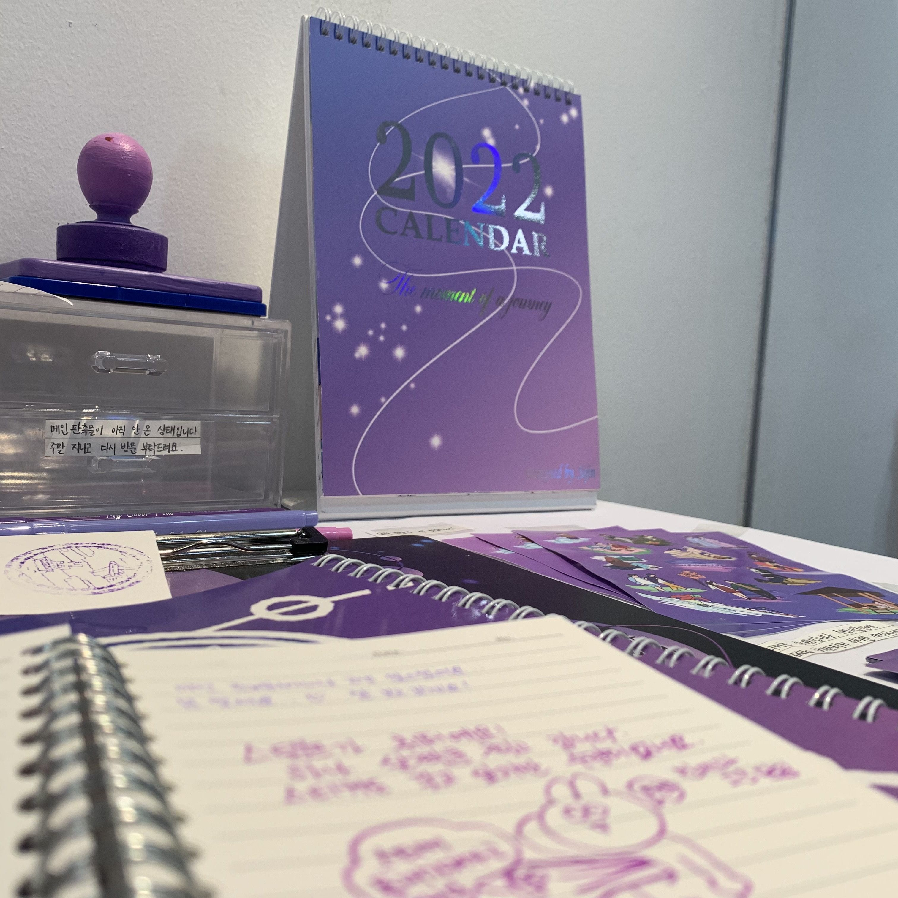
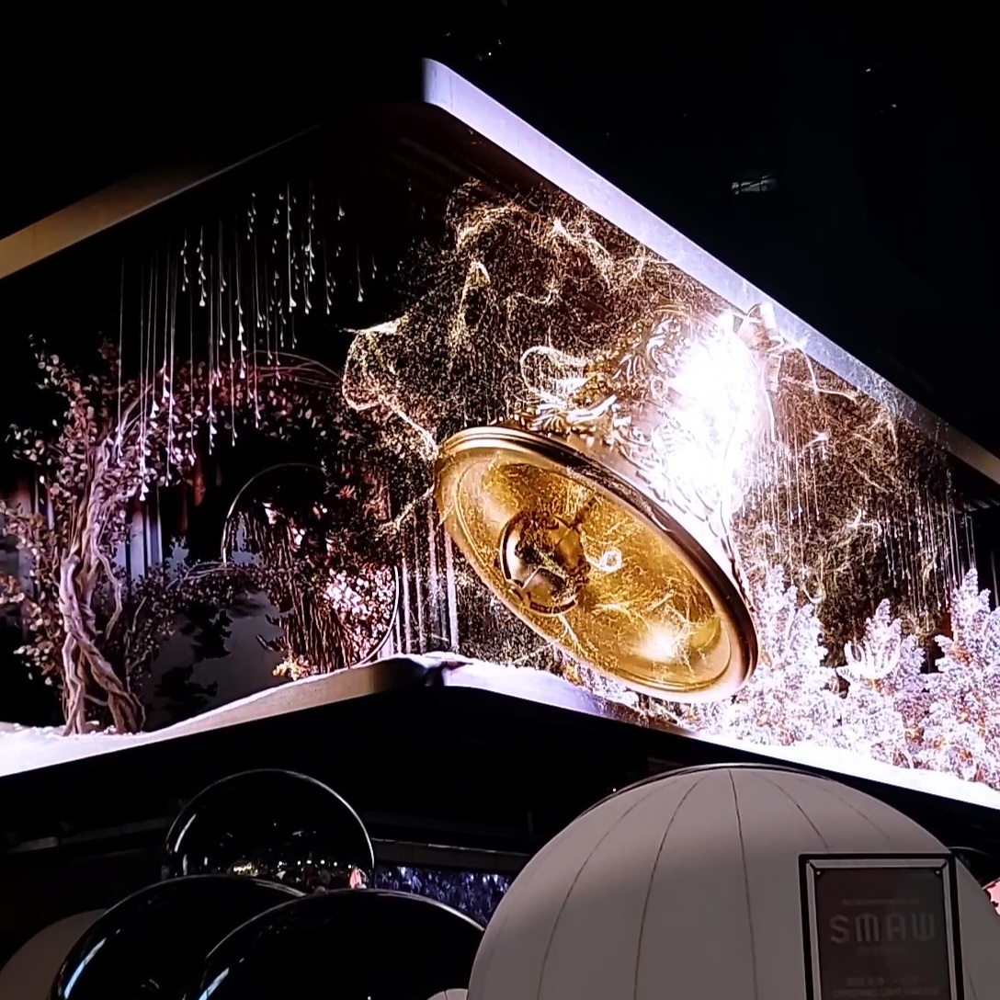
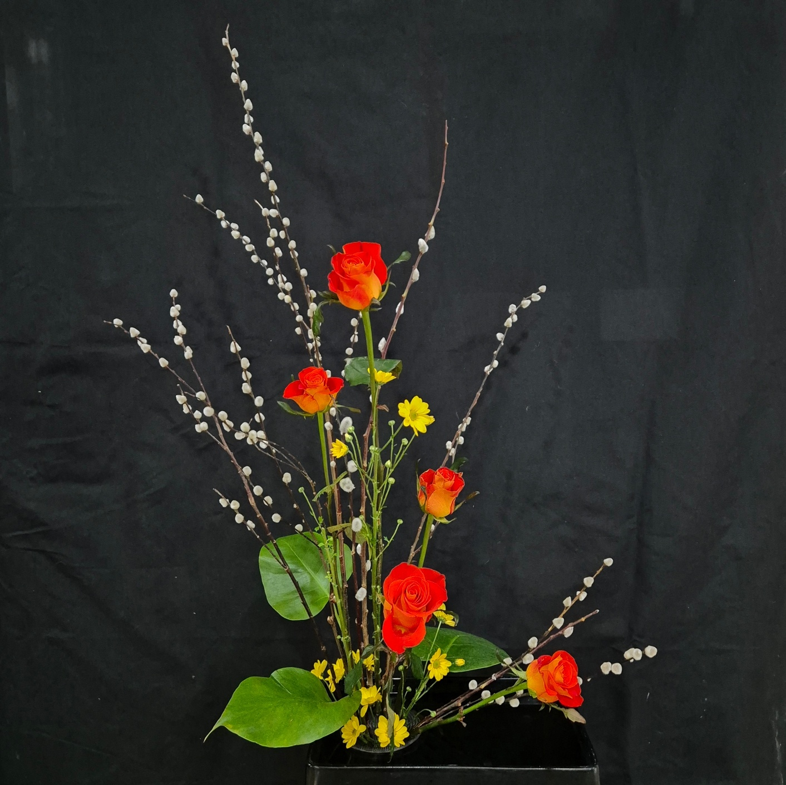
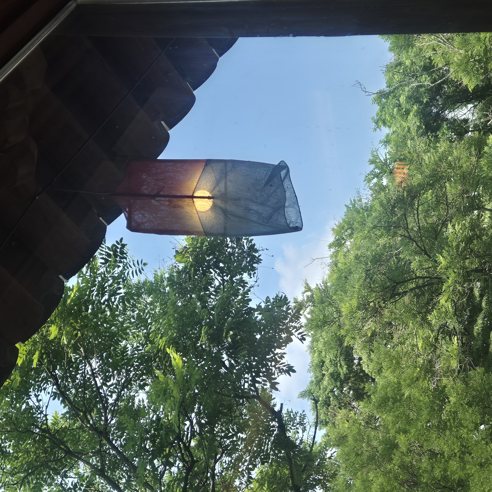

2021년, 첫 미술전공전을 했습니다. 작품명은 [여행의 순간. 유포리아] 이며, 달마다의 여행의 순간을 그려 캘린더로 제작했습니다. 처음 나만의 작품을 만들어보는 뜻깊은 경험이었습니다.

2023년, 크리스마스를 기념한 삼성역 미디어아트를 보러 갔습니다. 3D에 관심이 많아 기대를 잔뜩했어요. 미디어아트와 모션그래픽에 더욱 관심을 갖게 된 계기였습니다.

짧은 기간 플라워디자인과를 다녔었습니다. 제겐 새로운 도전이었고 꽃을 좋아해서 힐링되는 시간이었습니다.

2025년 여름에 전주로 가족여행을 다녀왔습니다. 거리와 풍경이 너무 아름다워 좋은 추억이 되었습니다. 가족과 함께하는 여행이 저에겐 무척 소중한 시간입니다.
2011년, 첫 초등학교 입학
작고 설레는 발걸음으로 세상의 문을 처음 두드리던 순간.
2015년, 첫 덕질
화면 너머의 누군가를 보며 꿈을 키우고, 가슴 설레던 시간들.
2019년, 고등학교 입시
늦었지만 의미 있었던 도전. 재능을 발견한 전환점.
2023년, 대학 입시 준비
미래를 향해 전력을 다했던 뜨거운 성장의 시간.